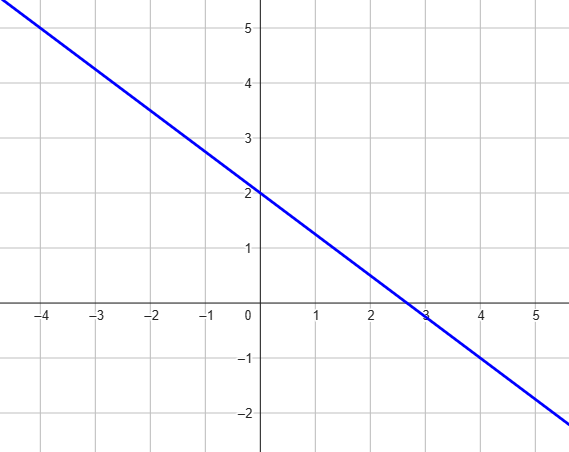

Compiti per casa
Esercizio 1
Consideriamo la retta rappresentata nel seguente grafico.

-
Calcolare il coefficiente angolare della retta.
-
Calcolare il termine noto della retta.
-
Scrivere l'equazione della retta rappresentata in figura
Soluzione
La retta in figura ha equazione \(y = -\dfrac{3}{4}x + 2\)
Esercizio 2
Dati i punti
\[
A(-3\,;\,\,2) \qquad B(1\,;\,\,3)
\]
chiamiamo \(r\) la retta passante per \(A\) e \(B\)
-
Calcolare il coefficiente angolare di \(r\)
-
Calcolare il termine noto di \(r\).
-
Scrivere l'equazione della retta \(r\).
Soluzione:
La retta \(s\) ha equazione \(y = 4x - 1\)
Esercizio 3
Consideriamo l'insieme di rette
\[
r_{k}:\,\, (-2k + 3)x + k\,y + 2 = 0
\]
e la retta
\[
s:\,\, y = 4x - 1
\]
-
Scrivere il coefficiente angolare di \(r_k\)
-
Scrivere il coefficiente angolare di \(s\)
-
Stabilire per quali valori di \(k\) la retta è \(r_k\) parallela alla retta \(s\)
Soluzione:
La retta \(r_k\) è parallela alla retta \(s\) se scegliamo \(k = -\dfrac{3}{2}\)
Esercizio 4
Consideriamo gli insiemi di rette
\[
r_{k}:\,\, (-2k + 1)x + ky - 1 = 0
\]
\[
s_{k}:\,\, y = (2k - 1)x + 3
\]
-
Scrivere il coefficiente angolare di \(r_k\)
-
Scrivere il coefficiente angolare di \(s_k\)
-
Stabilire per quali valori di \(k\) la retta \(r_k\) è perpendicolare alla retta \(s_k\).
Soluzione:
La retta \(r_k\) è parallela alla retta \(s\) se scegliamo \(k = \dfrac{1}{4}\,\,\,\) oppure \(k = 1\)